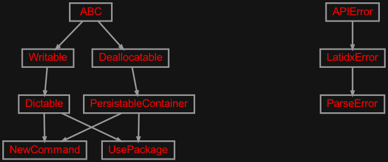
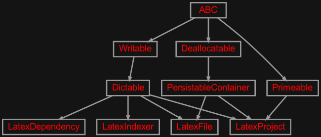

zensols.latidx package#
Submodules#
zensols.latidx.app#
Parse and index Latex files.
- class zensols.latidx.app.Application(indexer, log_config)[source]#
Bases:
objectParse and index Latex files.
- __init__(indexer, log_config)#
- dump_files(tex_path, output_format=_Format.txt)[source]#
List dependencies.
- Parameters:
tex_path (
str) – a path separated (‘:’ on Linux) list of files or directoriesoutput_format (
_Format) – the output format
-
indexer:
LatexIndexer# The file indexer.
-
log_config:
LogConfigurator# Used to update logging levels based on the ran action.
zensols.latidx.cli#

Command line entry point to the application.
- class zensols.latidx.cli.ApplicationFactory(*args, **kwargs)[source]#
Bases:
ApplicationFactory
zensols.latidx.domain#

Application domain classes.
- exception zensols.latidx.domain.LatidxError[source]#
Bases:
APIErrorThrown for any application level error.
- __module__ = 'zensols.latidx.domain'#
- class zensols.latidx.domain.NewCommand(macro_node, arg_spec_nodes, body_node)[source]#
Bases:
PersistableContainer,DictableA parsed macro definition using
\{provide,new,renew}command.- __init__(macro_node, arg_spec_nodes, body_node)#
-
macro_node:
LatexMacroNode# The node containing the macro.
- exception zensols.latidx.domain.ParseError(path, msg)[source]#
Bases:
LatidxErrorRaised for Latex file parsing errors.
- __annotations__ = {}#
- __module__ = 'zensols.latidx.domain'#
- class zensols.latidx.domain.UsePackage(macro_node, options_node, name_node)[source]#
Bases:
PersistableContainer,DictableA parsed use of a Latex
\usepackage{<name>}.- __init__(macro_node, options_node, name_node)#
-
macro_node:
LatexMacroNode# The node containing the macro.
-
name_node:
LatexCharsNode# The node with the name of the package to be imported.
-
options_node:
LatexCharsNode# The node containing the package import options (if present).
zensols.latidx.index#

Classes used to parse and index LaTeX files.
- class zensols.latidx.index.LatexDependency(source, targets)[source]#
Bases:
DictableAn import relationship given by Latex
usepackage.- __init__(source, targets)#
- property orphans: Tuple[str, ...]#
The target Latex packages that were imported by not found. This will typically include installed base packages (i.e.
hyperref).
-
source:
Union[LatexFile,str]# “The source file that contains the import statement or the string
rootif the root of the aggregation of dependnecies.
- write(depth=0, writer=<_io.TextIOWrapper name='<stdout>' mode='w' encoding='utf-8'>, include_relative_path=False, base_dir=None)[source]#
Write this instance as either a
Writableor as aDictable. If class attribute_DICTABLE_WRITABLE_DESCENDANTSis set asTrue, then use thewrite()method on children instead of writing the generated dictionary. Otherwise, write this instance by first creating adictrecursively usingasdict(), then formatting the output.If the attribute
_DICTABLE_WRITE_EXCLUDESis set, those attributes are removed from what is written in thewrite()method.Note that this attribute will need to be set in all descendants in the instance hierarchy since writing the object instance graph is done recursively.
- Parameters:
depth (
int) – the starting indentation depthwriter (
TextIOBase) – the writer to dump the content of this writable
- class zensols.latidx.index.LatexFile(path)[source]#
Bases:
PersistableContainer,DictableA Latex file (
.tex,.sty, etc) with parsed artifacts.- __init__(path)#
- property db: LatexContextDb#
- property newcommands: Dict[str, NewCommand]#
Get the
usepackagedeclarations in the file.
- property usepackages: Dict[str, UsePackage]#
Get the
usepackagedeclarations in the file.
- property walker: LatexWalker#
Iterates over parsed Latex artifacts (such as macros).
- write(depth=0, writer=<_io.TextIOWrapper name='<stdout>' mode='w' encoding='utf-8'>, include_path=True)[source]#
Write this instance as either a
Writableor as aDictable. If class attribute_DICTABLE_WRITABLE_DESCENDANTSis set asTrue, then use thewrite()method on children instead of writing the generated dictionary. Otherwise, write this instance by first creating adictrecursively usingasdict(), then formatting the output.If the attribute
_DICTABLE_WRITE_EXCLUDESis set, those attributes are removed from what is written in thewrite()method.Note that this attribute will need to be set in all descendants in the instance hierarchy since writing the object instance graph is done recursively.
- Parameters:
depth (
int) – the starting indentation depthwriter (
TextIOBase) – the writer to dump the content of this writable
- class zensols.latidx.index.LatexIndexer(candidate_extensions, recurse_dirs)[source]#
Bases:
DictableIndexes and parses Latex files. Candidate files refer to files we actually consider for parsing.
- __init__(candidate_extensions, recurse_dirs)#
- class zensols.latidx.index.LatexProject(files)[source]#
Bases:
PersistableContainer,Dictable,PrimeableA collection of dependencies of a set of files used in a LaTeX compliation process.
- __init__(files)#
- property dependencies: Dict[str, Dict[str, Any]]#
A nested directory of string file names and their recursive
usepackageincludes as children.
-
files:
Tuple[Union[LatexFile,Path],...]# The files to parse or those that have already been parsed. These are all
LatexFileinstances after this object is instantiated.
- property files_by_name: Dict[str, LatexFile]#
The files as key names and
LatexFileinstances as values.
- write(depth=0, writer=<_io.TextIOWrapper name='<stdout>' mode='w' encoding='utf-8'>)[source]#
Write this instance as either a
Writableor as aDictable. If class attribute_DICTABLE_WRITABLE_DESCENDANTSis set asTrue, then use thewrite()method on children instead of writing the generated dictionary. Otherwise, write this instance by first creating adictrecursively usingasdict(), then formatting the output.If the attribute
_DICTABLE_WRITE_EXCLUDESis set, those attributes are removed from what is written in thewrite()method.Note that this attribute will need to be set in all descendants in the instance hierarchy since writing the object instance graph is done recursively.
- Parameters:
depth (
int) – the starting indentation depthwriter (
TextIOBase) – the writer to dump the content of this writable